Each row is one held-out EEG window. The window's EEG selects a prompt from the 12-prompt library; the frozen MusicGen-small generates an 8-second clip from that prompt. The table compares the heard stimulus with the reconstructed clip.
Copyright. The heard recordings are commercial; only spectrograms are shown, and no stimulus waveform is redistributed. Every playable clip on this page is generated by the frozen model.
Aligned spectrograms. The original and reconstructed tiles use the same time axis (0–8 s), frequency axis (0–8 kHz), and colour scale, so each pair is directly comparable.
| window | original heard spectrogram only |
reconstructed spectrogram + audio |
CLAP cosine own / others |
|---|---|---|---|
| row 56 | 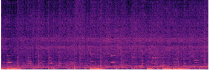 spectrogram only |
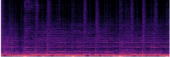 |
0.811 own others 0.436 |
| row 78 | 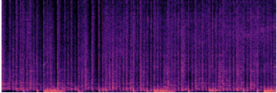 spectrogram only |
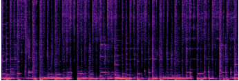 |
0.574 own others 0.581 |
| row 322 | 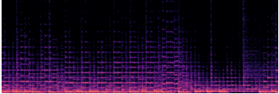 spectrogram only |
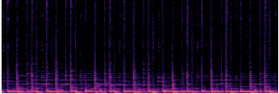 |
0.613 own others 0.596 |
| row 519 | 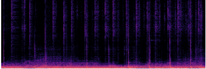 spectrogram only |
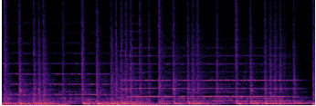 |
0.558 own others 0.487 |
| row 749 | 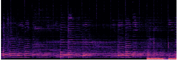 spectrogram only |
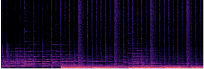 |
0.672 own others 0.598 |
| row 795 | 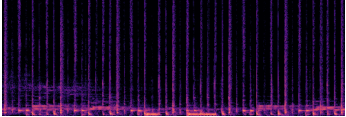 spectrogram only |
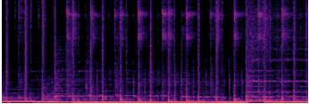 |
0.804 own others 0.613 |
| row 1083 | 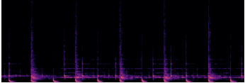 spectrogram only |
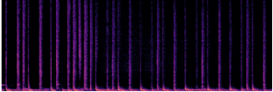 |
0.654 own others 0.434 |
| row 1138 | 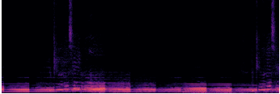 spectrogram only |
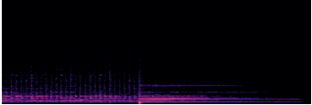 |
0.484 own others 0.411 |
| row 1150 | 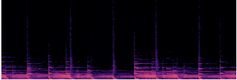 spectrogram only |
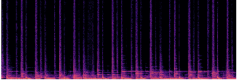 |
0.643 own others 0.591 |
| row 23942 | 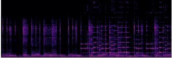 spectrogram only |
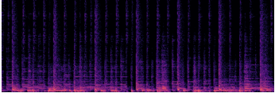 |
0.589 own others 0.483 |
| row 24496 | 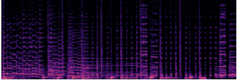 spectrogram only |
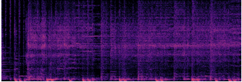 |
0.540 own others 0.511 |
| row 24714 | 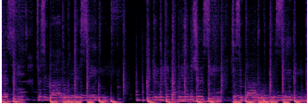 spectrogram only |
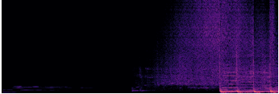 |
0.445 own others 0.390 |
| row 25724 | 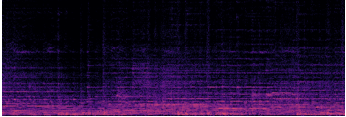 spectrogram only |
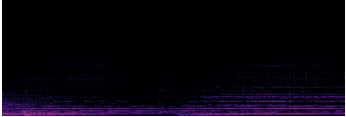 |
0.626 own others 0.393 |
| row 25757 | 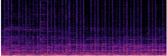 spectrogram only |
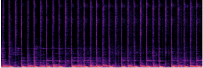 |
0.513 own others 0.564 |
What the CLAP columns mean. “own” is the cosine between the generated clip and the stimulus heard in that window; “others” is its mean cosine to the other 13 stimuli. This is a demo-level similarity check, not a benchmark result.
Caveat. This is an illustrative demo, not a benchmark result: no MOS was collected, and the generated clips are not evidence of cross-subject genre decoding. The same-prompt control is near zero, so the CLAP margin is genre-level rather than song-level. See the benchmark leaderboard for the evaluated claims.
Source: results/library_b/listen. Generator: frozen MusicGen-small,
400 tokens, temperature 0.9, fixed seed. No raw EEG, stimulus waveform, or checkpoints are
redistributed.